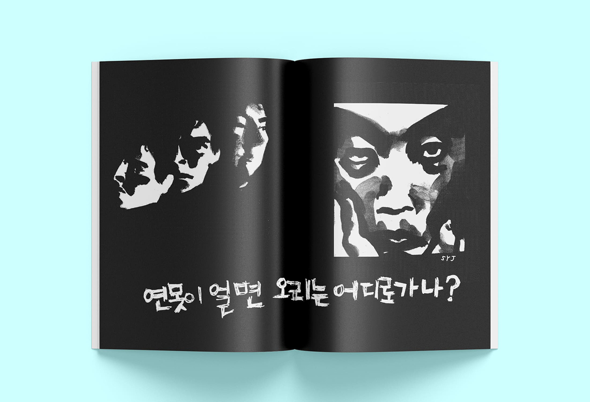
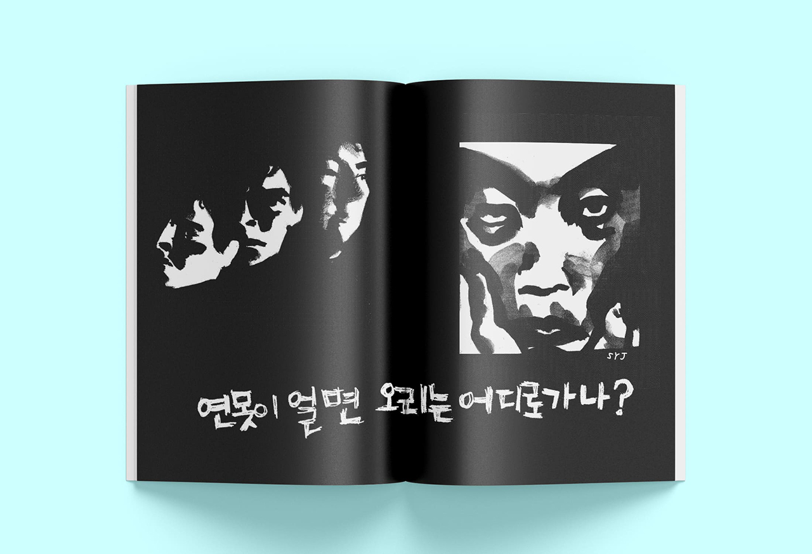

Un-Normal @
조소영
https://www.instagram.com/yeong__joe/
2020 졸업 전시의 전체 주제는 ‘Normal-Z’이다. 새로운 시대, 젊은 세대의 평범한 표본을 보여주겠다는 것이다. 그러나 과연 우리는 평범한 표본이 될 수 있을까? 우리는 늘 새롭기에 평범하지 않고, 새로움은 이미 새롭지 않다. 개발을 앞둔 낡은 건물들과 관조적인 태도의 젊은이들을 함께 엮었다.
We're not normal. We're not new. We're always new, so we can't be normal. We can't be new because we're always new. Something's changing, it's always the same.